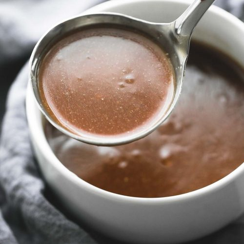
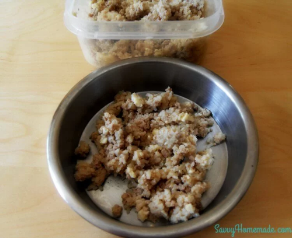
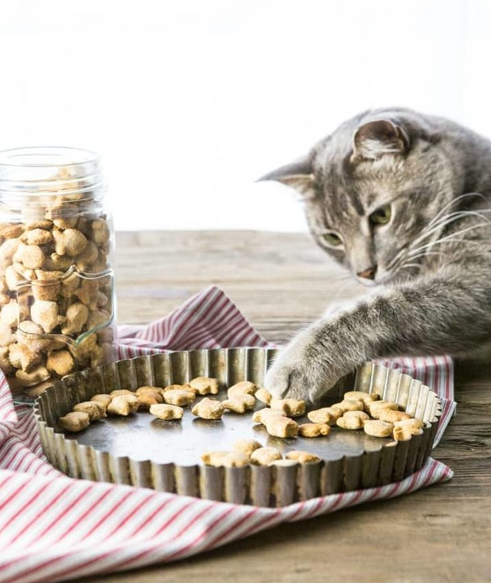

Mix together the milk powder with a small amount of water.
Add the eggs and mix well.
Pour the micture into a small frying pan and cook on medium-low heat until it is done.
Flip over like a pancake and spread cottage cheese and veggies over half of the cooked eggs. Then fold like an omelet. Once it is cool, proceed to cut it into bit-sized pieces to serve to your feline.
Kitty Chicken Gravy

Ingredients
1/4 cup of Chicken liver
1/2 cup of Mixture of chicken gizzard
2 Cups of Water
2 Tbsp of All-Purpose Flour
Dash of Salt
Instructions
Boil the chicken parts in the water until it becomes tender
Remove the chicken and then chop them while keeping the stock inside.
Tkae a saucepan and pour thestock, flour, the meat, and salt. Continue to let it cooking over lowheat while stirring from time to time until the gracy is thick.
Another option instead would be putting these ingredients into a blender to makea puree and perserve them as ice cubes for a longer period of time
Meat and Rice Dinner

Ingredients
1/2 Pound Ground Meat (chicken, beef, lamb or turkey are fine)
1/4 Cup of Rice
1 Large Hard-Boiled Egg
4 Teaspoons Olive Oil
1 Cup Chicken Stock
Instructions
Mash the boiled egg into a bowl.
Place all the ingredients into a saucepan and boil over a medium-low heat.
While the stock is cooking, reduce the heat and simmer gently for 20 minutes or until the stock is reduced.
The rice will expand and swell and absorb much of the liquid.
Remove the homemade cat food mixture from the heat and allow it to cool completely.Blend the mixture in a food processor until all the ingredients are mashed together.
Place into an air-tight container and store in the fridge for up to 3 days.
Salmon Cat Treat

Ingredients
10 oz Canned Salmon Undrained
1 Egg Beaten
2 Cups Whole Wheat Flour
Small Fish-Shaped Cookie Cutter (Optional)
Instructions
Heat oven to 350°. Pulse 10 oz canned salmon (undrained) in a food processor and chop as finely as possible.
In a stand mixer, combine salmon, 1 egg (beaten) and 2 cups whole wheat flour until dough forms. If dough is too dry, add up to 1/3 cup water. If dough is too wet or sticky, add a bit more flour. Dough should be tacky but not sticky.
Roll out dough on a floured surface until about 1/4 inch thick. Use a 3/4-inch cookie cutter in the shape of your choice to create your treats.
Place treats on a parchment-lined baking sheet and bake at 350° for about 20 minutes. When they’re slightly browned and crunchy, they’re done.
Allow to cool before serving.
Store in an airtight container for up to 2 weeks.